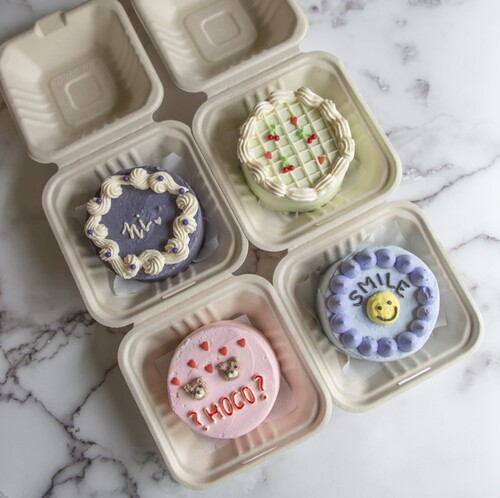
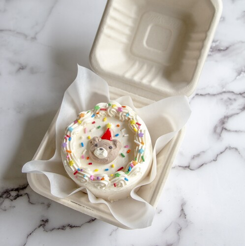

Arya Singla
Hello, my name is Arya Singla and I am a pre-business student at UC Riverside. My ultimate goal is to own my own business one day, and my concentration in management will help me achieve that dream. I have already gained some valuable experience in the business world through my home-based baking business, multiple retail jobs, and leadership roles in student organizations. Running my own home-based baking business was an incredible learning experience for me. It taught me about the importance of time management, financial management, and customer service. I had to be extremely organized to ensure that I delivered my products on time, while also keeping track of my expenses and profits. Additionally, customer satisfaction was my top priority, so I learned how to communicate effectively and develop strong relationships with my clients. Working multiple retail jobs has also taught me a lot about sales and marketing. In these roles, I had to identify target markets and create effective advertising campaigns to drive sales. I learned about the importance of customer relationship management and how to communicate effectively to ensure that customers were satisfied with their purchases. Lastly, leading multiple student organizations has taught me the importance of leadership. I have had the opportunity to develop my communication skills, delegate tasks, and manage conflicts effectively. These skills will be invaluable to me as I grow my business and work with employees and clients. While my experiences have given me a strong foundation in business, I recognize that there is still much more for me to learn. I plan to take courses and attend workshops to expand my knowledge of business concepts and practices. Additionally, I will seek out mentorship opportunities from industry professionals who can provide guidance and advice. Networking is also essential in the business world, so I plan to attend industry events and join business clubs to expand my connections and gain insights into the industry. Building a strong network can provide me with invaluable resources and connections that can help me grow my business in the future. Ultimately, cultivating an entrepreneurial mindset is crucial for success in the business world. I plan to seek out new opportunities, take calculated risks, and be open to change. I know that success in business requires creativity, resilience, and adaptability, so I will continue to develop my problem-solving skills and learn how to identify and capitalize on emerging trends and opportunities. In conclusion, my experiences have given me a solid foundation for a career in business, but there is still much more for me to learn. I am excited to continue growing my knowledge, expanding my network, and cultivating an entrepreneur. Running my own home-based baking business was an incredible learning experience for me. It taught me about the importance of time management, financial management, and customer service. I had to be extremely organized to ensure that I delivered my products on time, while also keeping track of my expenses and profits. Additionally, customer satisfaction was my top priority, so I learned how to communicate effectively and develop strong relationships with my clients.
Hello, my name is Arya Singla and I am a pre-business student at UC Riverside. My ultimate goal is to own my own business one day, and my concentration in management will help me achieve that dream. I have already gained some valuable experience in the business world through my home-based baking business, multiple retail jobs, and leadership roles in student organizations. Running my own home-based baking business was an incredible learning experience for me. It taught me about the importance of time management, financial management, and customer service. I had to be extremely organized to ensure that I delivered my products on time, while also keeping track of my expenses and profits. Additionally, customer satisfaction was my top priority, so I learned how to communicate effectively and develop strong relationships with my clients. Working multiple retail jobs has also taught me a lot about sales and marketing. In these roles, I had to identify target markets and create effective advertising campaigns to drive sales. I learned about the importance of customer relationship management and how to communicate effectively to ensure that customers were satisfied with their purchases. Lastly, leading multiple student organizations has taught me the importance of leadership. I have had the opportunity to develop my communication skills, delegate tasks, and manage conflicts effectively. These skills will be invaluable to me as I grow my business and work with employees and clients. While my experiences have given me a strong foundation in business, I recognize that there is still much more for me to learn. I plan to take courses and attend workshops to expand my knowledge of business concepts and practices. Additionally, I will seek out mentorship opportunities from industry professionals who can provide guidance and advice. Networking is also essential in the business world, so I plan to attend industry events and join business clubs to expand my connections and gain insights into the industry. Building a strong network can provide me with invaluable resources and connections that can help me grow my business in the future. Ultimately, cultivating an entrepreneurial mindset is crucial for success in the business world. I plan to seek out new opportunities, take calculated risks, and be open to change. I know that success in business requires creativity, resilience, and adaptability, so I will continue to develop my problem-solving skills and learn how to identify and capitalize on emerging trends and opportunities. In conclusion, my experiences have given me a solid foundation for a career in business, but there is still much more for me to learn. I am excited to continue growing my knowledge, expanding my network, and cultivating an entrepreneur. Running my own home-based baking business was an incredible learning experience for me. It taught me about the importance of time management, financial management, and customer service. I had to be extremely organized to ensure that I delivered my products on time, while also keeping track of my expenses and profits. Additionally, customer satisfaction was my top priority, so I learned how to communicate effectively and develop strong relationships with my clients.
Hello, my name is Arya Singla and I am a pre-business student at UC Riverside. My ultimate goal is to own my own business one day, and my concentration in management will help me achieve that dream. I have already gained some valuable experience in the business world through my home-based baking business, multiple retail jobs, and leadership roles in student organizations. Running my own home-based baking business was an incredible learning experience for me. It taught me about the importance of time management, financial management, and customer service. I had to be extremely organized to ensure that I delivered my products on time, while also keeping track of my expenses and profits. Additionally, customer satisfaction was my top priority, so I learned how to communicate effectively and develop strong relationships with my clients. Working multiple retail jobs has also taught me a lot about sales and marketing. In these roles, I had to identify target markets and create effective advertising campaigns to drive sales. I learned about the importance of customer relationship management and how to communicate effectively to ensure that customers were satisfied with their purchases. Lastly, leading multiple student organizations has taught me the importance of leadership. I have had the opportunity to develop my communication skills, delegate tasks, and manage conflicts effectively. These skills will be invaluable to me as I grow my business and work with employees and clients. While my experiences have given me a strong foundation in business, I recognize that there is still much more for me to learn. I plan to take courses and attend workshops to expand my knowledge of business concepts and practices. Additionally, I will seek out mentorship opportunities from industry professionals who can provide guidance and advice. Networking is also essential in the business world, so I plan to attend industry events and join business clubs to expand my connections and gain insights into the industry. Building a strong network can provide me with invaluable resources and connections that can help me grow my business in the future. Ultimately, cultivating an entrepreneurial mindset is crucial for success in the business world. I plan to seek out new opportunities, take calculated risks, and be open to change. I know that success in business requires creativity, resilience, and adaptability, so I will continue to develop my problem-solving skills and learn how to identify and capitalize on emerging trends and opportunities. In conclusion, my experiences have given me a solid foundation for a career in business, but there is still much more for me to learn. I am excited to continue growing my knowledge, expanding my network, and cultivating an entrepreneur. Running my own home-based baking business was an incredible learning experience for me. It taught me about the importance of time management, financial management, and customer service. I had to be extremely organized to ensure that I delivered my products on time, while also keeping track of my expenses and profits. Additionally, customer satisfaction was my top priority, so I learned how to communicate effectively and develop strong relationships with my clients.
Experience
Cashier
• Made sure that display shelves were organized to ensure products were easily seen and made more appealing to customers.
• Knew and familiarized products to helps customers find what they were looking for.
• Proactively watched for and recognized security thefts, and knew how to prevent or handle these situations.
Sales Representative
• Introduced customers to the concept of exotic snacks (foreign or rare food and drink items sold for the purpose of new experiences)
• Performed market research for new products and researched competitor advantages and increased sales by roughly 12%
• Operated cash register for cash, check, and credit card transactions
Small Business Owner
• Processes many custom baked good orders for local customers per month
• Operates various kitchen equipment such as ovens, mixers, scales, etc. on a regular basis
• Processes many custom orders per month
• Individually handles customer inquiries, questions, and support
Education
UC Riverside
Portfolio

